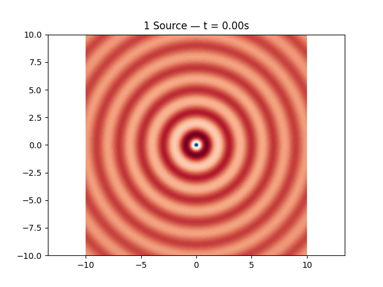
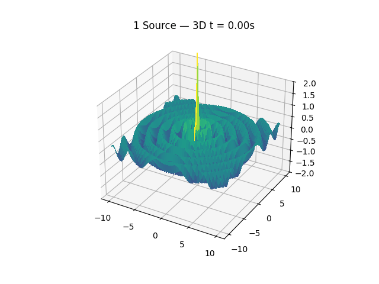
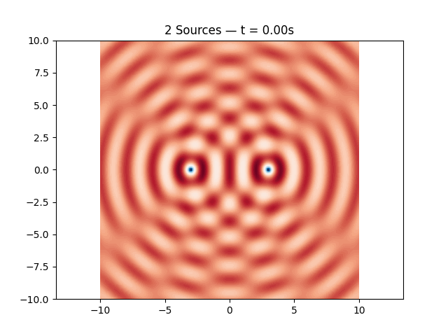
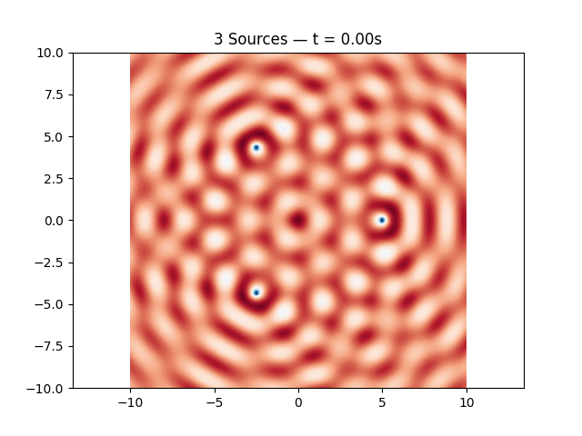
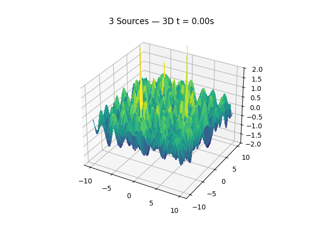
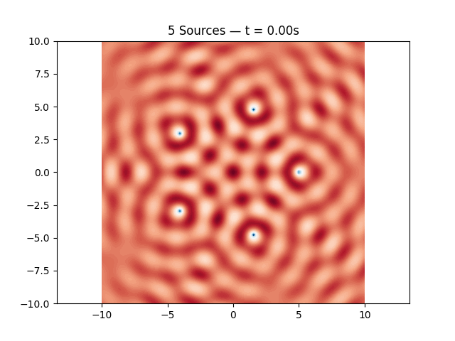
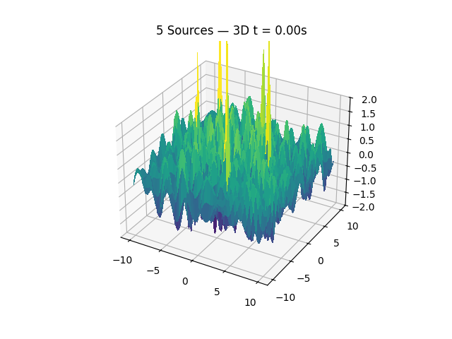

Problem 1
Interference Patterns on a Water Surface
1. Mathematical Setup
Understanding the formation of interference patterns on a water surface begins with a careful mathematical formulation of the geometry and source arrangement. In this setup, we focus on placing point wave sources at the vertices of a regular polygon, centered around the origin.
1.1 Choosing a Regular Polygon
We consider a regular polygon with \(N\) sides, where \(N \in \mathbb{N}\) and \(N \geq 3\). Regular polygons have the following properties:
- All sides are of equal length.
- All interior angles are equal.
- Vertices are evenly spaced on a circle.
Each vertex lies on a circle of radius \(R\), centered at the origin \((0, 0)\). Examples include:
- \(N = 3\): Equilateral triangle
- \(N = 4\): Square
- \(N = 5\): Regular pentagon
- \(N = 6\): Regular hexagon
The angle subtended between adjacent vertices is given by:
1.2 Vertex Coordinates
Assuming the center of the polygon is at the origin \((0, 0)\), the angle \(\alpha_i\) of the \(i\)-th vertex relative to the positive \(x\)-axis is:
Using polar to Cartesian conversion, the coordinates \((x_i, y_i)\) of the \(i\)-th vertex are:
So each vertex is located at:
1.3 Symmetry and Structure
This arrangement ensures:
- Rotational symmetry of order \(N\)
- Uniform distribution of wave sources
- Mathematical convenience for simulation
2. Wave Source Modeling
Each vertex of the selected regular polygon acts as a point source emitting circular waves on the water surface. These waves propagate outward, interfere with one another, and produce complex patterns due to superposition.
2.1 Assigning Wave Sources
Let the total number of vertices (and therefore wave sources) be \(N\).
Each source is placed at a vertex coordinate:
Each vertex emits a circular, radially symmetric wave, spreading out from its center.
2.2 Defining Wave Parameters
Each wave is described by the following displacement function:
where:
- \(\eta_i(x, y, t)\) is the vertical displacement at point \((x, y)\) and time \(t\) due to the \(i\)-th source
- \(A\) is the amplitude of the wave (constant for all sources)
- \(r_i = \sqrt{(x - x_i)^2 + (y - y_i)^2}\) is the distance from the \(i\)-th source to the observation point
- \(k = \dfrac{2\pi}{\lambda}\) is the wave number, with \(\lambda\) as the wavelength
- \(\omega = 2\pi f\) is the angular frequency, with \(f\) as the temporal frequency
- \(\phi\) is the initial phase of the wave (same for all sources if coherent)
Assuming coherent sources, all waves share the same values of \(A\), \(\lambda\), \(f\), and \(\phi\).
2.3 Coherence Assumption
For simplicity and physical realism:
- All sources emit waves in phase: \(\phi_i = \phi\) for all \(i\)
- All waves have the same frequency and wavelength: \(f_i = f\), \(\lambda_i = \lambda\)
- The medium is homogeneous and isotropic, allowing identical propagation speed for all waves
This assumption ensures that observed interference is purely due to path length differences, not source variability.
3. Wave Equation Implementation
With the geometry and wave parameters defined, we now formulate the explicit mathematical expression for the wave generated by each source.
3.1 General Form of a Circular Wave
The displacement of the water surface caused by a single point source located at \((x_i, y_i)\) is given by:
where:
- \(\eta_i(x, y, t)\): surface displacement at point \((x, y)\) and time \(t\) due to the \(i\)-th source
- \(A\): wave amplitude
- \(k = \dfrac{2\pi}{\lambda}\): wave number
- \(\omega = 2\pi f\): angular frequency
- \(\phi\): initial phase
- \(r_i\): radial distance from source \(i\) to point \((x, y)\)
3.2 Distance from Source to Field Point
The radial distance \(r_i\) from the \(i\)-th source to an arbitrary point \((x, y)\) on the water surface is:
Substituting \(r_i\) into the wave function:
This equation fully describes the spatiotemporal behavior of the wave from source \(i\).
3.3 Summary of Parameters
| Symbol | Description | Unit |
|---|---|---|
| \(A\) | Amplitude | meters (m) |
| \(\lambda\) | Wavelength | meters (m) |
| \(f\) | Frequency | hertz (Hz) |
| \(k\) | Wave number, \(k = \dfrac{2\pi}{\lambda}\) | radians/m |
| \(\omega\) | Angular frequency, \(\omega = 2\pi f\) | radians/s |
| \(\phi\) | Initial phase | radians |
| \(r_i\) | Distance from source to \((x, y)\) | meters (m) |
4. Superposition Principle
In wave physics, the principle of superposition states that when multiple waves overlap in space, the resulting displacement at any point is the algebraic sum of the individual wave displacements at that point.
4.1 Total Wave Displacement
Given \(N\) coherent point sources, each located at \((x_i, y_i)\) and producing a wave described by:
The total surface displacement \(\eta_{\text{sum}}(x, y, t)\) at point \((x, y)\) and time \(t\) is given by:
This summation must be computed pointwise across the surface domain of interest.
4.2 Physical Interpretation
- Where waves constructively interfere (peaks meet peaks or troughs meet troughs), the displacement magnitude increases.
- Where waves destructively interfere (peaks meet troughs), the displacement magnitude decreases or cancels out.
- The resulting interference pattern is a direct consequence of differences in the path lengths \(r_i\) and the shared phase/frequency properties of the waves.
4.3 Time Dependency
Although the full function \(\eta_{\text{sum}}(x, y, t)\) evolves over time, many visual analyses are conducted by examining a snapshot in time, such as:
This captures the spatial interference pattern formed at a specific moment and is useful for visualization and interpretation.
5. Simulation Grid and Animated Visualization (with GIF Export and Inline Display)
We simulate time-evolving wave interference patterns from multiple coherent point sources. For each configuration (1, 2, 3, and 5 sources), we generate:
- A 2D animated contour plot
- A 3D animated surface plot
Each animation is saved as a .gif and displayed inline using base64 encoding.
5.1 Setup and Wave Function
import numpy as np
import matplotlib.pyplot as plt
import matplotlib.animation as animation
from mpl_toolkits.mplot3d import Axes3D
from IPython.display import HTML
import base64
# Wave parameters
A = 1
wavelength = 2
k = 2 * np.pi / wavelength
f = 1
omega = 2 * np.pi * f
phi = 0
# Grid setup
x = np.linspace(-10, 10, 200)
y = np.linspace(-10, 10, 200)
X, Y = np.meshgrid(x, y)
# Wave superposition function
def compute_eta(sources, t):
eta = np.zeros_like(X)
for (x0, y0) in sources:
R = np.sqrt((X - x0)**2 + (Y - y0)**2)
R[R == 0] = 1e-10
eta += A / np.sqrt(R) * np.cos(k * R - omega * t + phi)
return eta
# Display helper
def display_gif(gif_path):
with open(gif_path, 'rb') as f:
gif_data = f.read()
b64_gif = base64.b64encode(gif_data).decode('utf-8')
return HTML(f'<img src="data:image/gif;base64,{b64_gif}">')
5.2 One Source — 2D and 3D Animation
# Source configuration
sources = [(0, 0)]
N = 1
# 2D Animation
fig, ax = plt.subplots()
def update_2d(frame):
t = frame * 0.1
ax.clear()
eta = compute_eta(sources, t)
ax.contourf(X, Y, eta, levels=100, cmap='RdBu')
ax.set_title(f'{N} Source — t = {t:.2f}s')
ax.axis('equal')
ani = animation.FuncAnimation(fig, update_2d, frames=60, interval=100)
gif_path = f'interference_{N}_source_2D.gif'
ani.save(gif_path, writer='pillow', fps=10)
display_gif(gif_path)

# 3D Animation
fig = plt.figure()
ax = fig.add_subplot(111, projection='3d')
def update_3d(frame):
t = frame * 0.1
ax.clear()
eta = compute_eta(sources, t)
ax.plot_surface(X, Y, eta, cmap='viridis', linewidth=0, antialiased=False)
ax.set_title(f'{N} Source — 3D t = {t:.2f}s')
ax.set_zlim(-2, 2)
ani3d = animation.FuncAnimation(fig, update_3d, frames=60, interval=100)
gif_path = f'interference_{N}_source_3D.gif'
ani3d.save(gif_path, writer='pillow', fps=10)
display_gif(gif_path)

5.3 Two Sources — 2D and 3D Animation
sources = [(-3, 0), (3, 0)]
N = 2
# 2D Animation
fig, ax = plt.subplots()
def update_2d(frame):
t = frame * 0.1
ax.clear()
eta = compute_eta(sources, t)
ax.contourf(X, Y, eta, levels=100, cmap='RdBu')
ax.set_title(f'{N} Sources — t = {t:.2f}s')
ax.axis('equal')
ani = animation.FuncAnimation(fig, update_2d, frames=60, interval=100)
gif_path = f'interference_{N}_sources_2D.gif'
ani.save(gif_path, writer='pillow', fps=10)
display_gif(gif_path)

# 3D Animation
fig = plt.figure()
ax = fig.add_subplot(111, projection='3d')
def update_3d(frame):
t = frame * 0.1
ax.clear()
eta = compute_eta(sources, t)
ax.plot_surface(X, Y, eta, cmap='viridis', linewidth=0, antialiased=False)
ax.set_title(f'{N} Sources — 3D t = {t:.2f}s')
ax.set_zlim(-2, 2)
ani3d = animation.FuncAnimation(fig, update_3d, frames=60, interval=100)
gif_path = f'interference_{N}_sources_3D.gif'
ani3d.save(gif_path, writer='pillow', fps=10)
display_gif(gif_path)

5.4 Three Sources (Triangle) — 2D and 3D Animation
N = 3
R_polygon = 5
sources = [(R_polygon * np.cos(2*np.pi*i/N), R_polygon * np.sin(2*np.pi*i/N)) for i in range(N)]
# 2D Animation
fig, ax = plt.subplots()
def update_2d(frame):
t = frame * 0.1
ax.clear()
eta = compute_eta(sources, t)
ax.contourf(X, Y, eta, levels=100, cmap='RdBu')
ax.set_title(f'{N} Sources — t = {t:.2f}s')
ax.axis('equal')
ani = animation.FuncAnimation(fig, update_2d, frames=60, interval=100)
gif_path = f'interference_{N}_sources_2D.gif'
ani.save(gif_path, writer='pillow', fps=10)
display_gif(gif_path)

# 3D Animation
fig = plt.figure()
ax = fig.add_subplot(111, projection='3d')
def update_3d(frame):
t = frame * 0.1
ax.clear()
eta = compute_eta(sources, t)
ax.plot_surface(X, Y, eta, cmap='viridis', linewidth=0, antialiased=False)
ax.set_title(f'{N} Sources — 3D t = {t:.2f}s')
ax.set_zlim(-2, 2)
ani3d = animation.FuncAnimation(fig, update_3d, frames=60, interval=100)
gif_path = f'interference_{N}_sources_3D.gif'
ani3d.save(gif_path, writer='pillow', fps=10)
display_gif(gif_path)

5.5 Five Sources (Pentagon) — 2D and 3D Animation
N = 5
R_polygon = 5
sources = [(R_polygon * np.cos(2*np.pi*i/N), R_polygon * np.sin(2*np.pi*i/N)) for i in range(N)]
# 2D Animation
fig, ax = plt.subplots()
def update_2d(frame):
t = frame * 0.1
ax.clear()
eta = compute_eta(sources, t)
ax.contourf(X, Y, eta, levels=100, cmap='RdBu')
ax.set_title(f'{N} Sources — t = {t:.2f}s')
ax.axis('equal')
ani = animation.FuncAnimation(fig, update_2d, frames=60, interval=100)
gif_path = f'interference_{N}_sources_2D.gif'
ani.save(gif_path, writer='pillow', fps=10)
display_gif(gif_path)

# 3D Animation
fig = plt.figure()
ax = fig.add_subplot(111, projection='3d')
def update_3d(frame):
t = frame * 0.1
ax.clear()
eta = compute_eta(sources, t)
ax.plot_surface(X, Y, eta, cmap='viridis', linewidth=0, antialiased=False)
ax.set_title(f'{N} Sources — 3D t = {t:.2f}s')
ax.set_zlim(-2, 2)
ani3d = animation.FuncAnimation(fig, update_3d, frames=60, interval=100)
gif_path = f'interference_{N}_sources_3D.gif'
ani3d.save(gif_path, writer='pillow', fps=10)
display_gif(gif_path)

6. Analysis and Explanation
The interference patterns formed by multiple wave sources are deeply influenced by the geometric symmetry of their arrangement and the fundamental principles of wave behavior. In this section, we analyze the resulting patterns and interpret their physical significance.
6.1 Interpreting Patterns Based on Geometry
The configuration of wave sources at the vertices of a regular polygon introduces specific spatial symmetries into the interference pattern:
- For a polygon with \(N\) sides, there is an \(N\)-fold rotational symmetry in the interference pattern.
- The interference pattern exhibits periodic structures and nodal lines (regions of destructive interference) that radiate outward or form closed loops.
- The distance between sources and the radius \(R\) of the polygon directly affect the density and spacing of the interference fringes.
Examples:
- Triangle (\(N=3\)): Produces a 3-fold symmetry pattern with prominent lobes spaced at \(120^\circ\) intervals.
- Square (\(N=4\)): Results in a cross-shaped interference pattern with symmetry along both \(x\) and \(y\) axes.
- Pentagon (\(N=5\)): Creates a more intricate pattern with fivefold symmetry, exhibiting complex combinations of constructive and destructive regions.
As \(N\) increases, the pattern approaches circular symmetry, similar to a ring of sources (e.g., a circular aperture in wave optics).
6.2 Explaining the Physical Meaning
The resulting interference patterns arise from the principle of linear superposition:
Where each \(\eta_i\) represents the wave contribution from source \(i\). The total displacement at a point \((x, y)\) is the algebraic sum of all wave contributions.
Key Physical Phenomena:
-
Constructive Interference:
Occurs when waves arrive in phase (their peaks align), producing a local maximum in displacement. -
Destructive Interference:
Occurs when waves arrive out of phase (peak meets trough), resulting in cancellation or minimum displacement. -
Path Difference and Phase Relationship:
The interference at any point depends on the relative path lengths \(r_i\) from each source to that point. Equal path lengths lead to constructive interference, while differences of \(\frac{\lambda}{2}, \frac{3\lambda}{2}, \dots\) cause destructive interference.
Wave Coherence:
Because all sources are assumed coherent (same frequency \(f\), wavelength \(\lambda\), amplitude \(A\), and phase \(\phi\)), the interference pattern is stable over time, simply oscillating with frequency \(f\).
Time Dependence:
Though the wave field \(\eta(x, y, t)\) varies in time, the spatial structure of the interference pattern is defined by the fixed positions of the sources and the wavelength \(\lambda\). At any instant \(t\), the same nodal and antinodal structures appear, merely oscillating in magnitude.
6.3 Summary of Observations
| Configuration | Dominant Features | Symmetry |
|---|---|---|
| 1 Source | Radial ripples | Circular |
| 2 Sources | Stripes, fringes | Mirror symmetry |
| 3 Sources | Radial lobes | 3-fold |
| 4 Sources | Grid-like nodes | 4-fold (cross) |
| 5 Sources | Starburst pattern | 5-fold |
These observations illustrate the direct link between geometry, symmetry, and interference phenomena in wave physics.